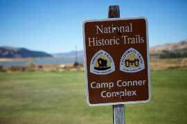

Picturing history: Soda Springs, Idaho

Located in Caribou County of southeastern Idaho, the little town of Soda Springs
was an unusual but welcome stop on the Oregon Trail. Travelers enjoyed bathing
in the natural mineral springs that bubble out of the earth there. The site
became a landmark along the trail and a first destination to travelers in general.
This interpretive panel is near the site of Morristown, Idaho, a settlement established
by Col. Patrick Connor that now lies under the waters of a reservoir. | Kenneth Mays
A state of Idaho interpretive panel near the town notes that Col. Patrick E. Connor
(from Fort Douglas, Utah) established a settlement called Morristown, and adjacent
army post near the mineral springs in 1863. In subsequent years, the population began
to dwindle. In 1870, LDS Church President Brigham Young established what is present-day
Soda Springs just east of Connor’s location.
To read the rest of this article click here.